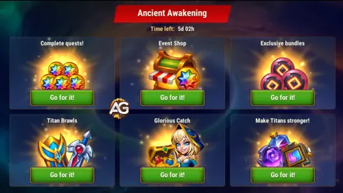
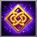
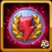
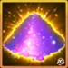
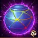
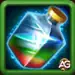
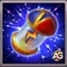
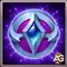
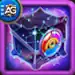

Ancient Awakening is a seven-day, Monday-to-Sunday event group built around Pallant, Eternal Marks, Titan materials, and two linked quest branches. The best plan is to complete daily opportunities without waste, then move flexible actions to the exact day when Guild VS rewards the same action.

Ancient Awakening Guides
Three Different Reset Rules
- Main event: most ladders are cumulative; Tactical Losses, Heroic Discovery, and Secrets of Outland repeat after a full walkthrough.
- Firstborn Force: login is cumulative, while the other seven ladders reset daily.
- Unstable Equilibrium: all eight ladders are cumulative across the week.
Always claim a completed stage before its applicable reset.
Alexandre's Quick Strategy
- Claim daily login rewards and keep Expeditions running.
- Friday: combine Heroic Chest and Outland openings with Guild VS.
- Saturday: use claimed Rune rewards and coordinate qualifying level 6 troop losses.
- Sunday: finish remaining event targets and collect rewards.
Best Monday-to-Sunday Plan
| Day | Best Ancient Awakening Actions | Guild VS Value |
|---|---|---|
| 1 — Monday | Open an Elemental Sphere; Open a Summoning Sphere; Defeat Boss; Start an Expedition; Open a chest in the Tower | 1,200 points per 1 (Open an Elemental Sphere); 1,500 points per 1 (Open a Summoning Sphere); 850 points per 1 (Defeat Boss); 5,000 points per 1 (Start an Expedition); 4,000 points per 1 (Open a chest in the Tower) |
| 2 — Tuesday | Fight in the Arena; Fight in the Grand Arena; Start an Expedition; Open a chest in the Tower | 6,000 points per 1 (Fight in the Arena); 6,000 points per 1 (Fight in the Grand Arena); 5,000 points per 1 (Start an Expedition); 4,000 points per 1 (Open a chest in the Tower) |
| 3 — Wednesday | Use research speed-ups; Open an Artifact Chest; Defeat Boss; Start an Expedition; Open a chest in the Tower | 200 points per minute of research speed-up; 750 points per 1 (Open an Artifact Chest); 850 points per 1 (Defeat Boss); 5,000 points per 1 (Start an Expedition); 4,000 points per 1 (Open a chest in the Tower) |
| 4 — Thursday | Spend Mastery Crystals; Fight in the Arena; Fight in the Grand Arena; Start an Expedition; Open a chest in the Tower | 200 points per 15 (Spend Mastery Crystals); 6,000 points per 1 (Fight in the Arena); 6,000 points per 1 (Fight in the Grand Arena); 5,000 points per 1 (Start an Expedition); 4,000 points per 1 (Open a chest in the Tower) |
| 5 — Friday | Open Heroic Chest; Open a chest in Outlands; Open an Elemental Sphere; Open an Artifact Chest; Defeat Boss; Start an Expedition; Open a chest in the Tower | 4,000 points per 1 (Open Heroic Chest); 2,000 points per 1 (Open a chest in Outlands); 1,200 points per 1 (Open an Elemental Sphere); 750 points per 1 (Open an Artifact Chest); 850 points per 1 (Defeat Boss); 5,000 points per 1 (Start an Expedition); 4,000 points per 1 (Open a chest in the Tower) |
| 6 — Saturday | Lose Lv. 6 Troops battling another player; Spend Rune Stones; Spend Rune Spheres; Fight in the Arena; Fight in the Grand Arena; Start an Expedition; Open a chest in the Tower | 8 points per 1 (Lose Lv. 6 Troops battling another player); 100 points per 20 (Spend Rune Stones); 50,000 points per 100 (Spend Rune Spheres); 6,000 points per 1 (Fight in the Arena); 6,000 points per 1 (Fight in the Grand Arena); 5,000 points per 1 (Start an Expedition); 4,000 points per 1 (Open a chest in the Tower) |
| 7 — Sunday | Finish remaining event milestones and claim rewards. | No Guild VS tasks. |
Point values and active days were checked against guild_vs_hwa.json. Guild VS has no tasks on Sunday.
Tactical Losses and Guild VS
Tactical Losses requires level 6 troop losses. Saturday's Guild VS task awards 8 points per level 6 troop lost while battling another player. The event source does not provide loss counts per milestone, so no total Guild VS potential is assumed.
The Two Linked Quest Branches
Firstborn Force
A daily-reset branch covering VIP Points, Guild Activity, Fairy Dust, Summoning Circle summons, Tower chests, Artifact Chests, and Realm bosses. It supplies up to 426 stage completions: six login stages plus 60 daily stages over seven days. The main meta ends at 370 quests.
Unstable Equilibrium
A cumulative branch covering VIP Points, Emeralds, research speed-ups, Elemental Spheres, Rune Stones, Arena, and Grand Arena. It contains 91 possible stages, so eleven can be skipped while still reaching the 80-quest meta reward.
Pallant Event Shop
The main event awards Eternal Marks; Firstborn Force also lists Elemental Coins in Summoning Titans. Keep both currencies separate when planning shop purchases. Exclusive Pallant fragments and high-value Titan upgrades should be planned before common materials.
1. Day After Day
Objective: Log in on each of the seven event days.
Guild VS Strategy
The first three login rewards include Brawl Tokens. Claim all seven login milestones.
| Logins | Rewards |
|---|---|
| 1 | 500 Titan Skin Stones  300 Eternal Marks 30 Brawl Tokens |
| 2 | 500 Titan Skin Stones300 Eternal Marks30 Brawl Tokens |
| 3 | 500 Titan Skin Stones300 Eternal Marks30 Brawl Tokens |
| 4 | 500 Titan Skin Stones300 Eternal Marks |
| 5 | 500 Titan Skin Stones300 Eternal Marks |
| 6 | 500 Titan Skin Stones300 Eternal Marks |
| 7 | 500 Titan Skin Stones300 Eternal Marks |
| Total | 3,500 Titan Skin Stones; 2,100 Eternal Marks; 90 Brawl Tokens |
2. Tactical Losses
Objective: Lose level 6 troops. This chain can be repeated after a complete walkthrough. The supplied data identifies troop level 6 in every row but does not give the number of troops required per stage.
Guild VS Strategy
Saturday awards 8 Guild VS points per level 6 troop lost while battling another player. The event wording does not specify that battle condition; only qualifying PvP losses overlap.
| Stage / Troop Level | Rewards |
|---|---|
| 1 / Level 6 | 200 Eternal Marks5 Wood (10K)5 Food (10K) |
| 2 / Level 6 |  200 Fairy Dust100 Titan Skin Stones300 Eternal Marks |
| 3 / Level 6 | 250 Titan Skin Stones500 Eternal Marks1 Stone (100K) |
| 4 / Level 6 | 100 Titan Skin Stones700 Eternal Marks  2 Elemental Spheres |
| 5 / Level 6 | 500 Titan Skin Stones900 Eternal Marks1 Iron (100K) |
| 6 / Level 6 | 1,200 Eternal Marks2 Elemental Spheres7 5m Construction Speedups |
| 7 / Level 6 | 50 Rune Spheres1,500 Eternal Marks12 5m Construction Speedups |
| Total per walkthrough | 5,300 Eternal Marks; 5 Wood (10K); 5 Food (10K); 200 Fairy Dust; 950 Titan Skin Stones; 1 Stone (100K); 4 Elemental Spheres; 1 Iron (100K); 19 5m Construction Speedups; 50 Rune Spheres |
3. Trade Route
Objective: Spend Eternal Marks. The supplied fifth milestone is 1,300, between 9,000 and 17,000; this value is awaiting confirmation.
Guild VS Strategy
The local Guild VS rotation has no task for spending Eternal Marks. Plan purchases around the rewards you need.
| Eternal Marks Spent | Rewards |
|---|---|
| 1,500 |  400 Titan Potions |
| 3,500 | 400 Titan Skin Stones |
| 6,000 | 700 Titan Potions |
| 9,000 | 700 Titan Skin Stones10 Season Points |
| 1,300 | 900 Titan Potions |
| 17,000 | 900 Titan Skin Stones10 Season Points |
| 22,000 | 1,500 Titan Potions |
| 30,000 | 1,500 Titan Skin Stones |
| 40,000 | 2,000 Titan Potions10 Season Points |
| 55,000 | 2,000 Titan Skin Stones |
| 70,000 | 3,000 Titan Potions15 Season Points |
| 90,000 | 3,000 Titan Skin Stones |
| 120,000 | 4,000 Titan Potions |
| 150,000 | 4,000 Titan Skin Stones |
| 190,000 | 5,000 Titan Potions |
| 240,000 | 5,000 Titan Skin Stones30 Season Points |
| 300,000 | 6,000 Titan Potions |
| 400,000 | 6,000 Titan Skin Stones |
| Total | 23,500 Titan Potions; 23,500 Titan Skin Stones; 75 Season Points |
4. Heroic Discovery
Objective: Open Heroic Chests. The chain repeats after a complete walkthrough.
Guild VS Strategy
Friday awards 4,000 Guild VS points per Heroic Chest.
| Heroic Chests | Rewards |
|---|---|
| 1 | 200 Eternal Marks1 Elemental Spheres |
| 3 | 300 Eternal Marks400 Titan Potions |
| 6 | 400 Eternal Marks3 Elemental Spheres |
| 10 | 600 Eternal Marks800 Titan Potions |
| 15 | 1,000 Eternal Marks5 Elemental Spheres |
| 30 | 1,500 Eternal Marks1,600 Titan Potions |
| 60 | 2,000 Eternal Marks8 Elemental Spheres |
| 100 | 2,500 Eternal Marks5,000 Titan Potions |
| Total per walkthrough | 8,500 Eternal Marks; 17 Elemental Spheres; 7,800 Titan Potions |
5. Secrets of Outland
Objective: Open chests in Outlands. The chain repeats after a complete walkthrough.
Guild VS Strategy
Friday awards 2,000 Guild VS points per Outland chest. Use daily free openings throughout the event.
| Outland Chests | Rewards |
|---|---|
| 1 | 50 Fairy Dust50 Eternal Marks |
| 3 | 75 Eternal Marks100 Titan Potions |
| 5 | 100 Fairy Dust100 Eternal Marks |
| 10 | 150 Eternal Marks300 Titan Potions |
| 20 | 200 Fairy Dust300 Eternal Marks |
| 30 | 400 Eternal Marks600 Titan Potions |
| 40 | 300 Fairy Dust500 Eternal Marks |
| 50 | 600 Eternal Marks1,200 Titan Potions3 Elemental Spheres |
| 75 | 400 Fairy Dust700 Eternal Marks |
| 100 | 1,300 Eternal Marks2,500 Titan Potions |
| 150 | 800 Fairy Dust2,500 Eternal Marks5 Elemental Spheres |
| Total per walkthrough | 1,850 Fairy Dust; 6,675 Eternal Marks; 4,700 Titan Potions; 8 Elemental Spheres |
6. Beyond Horizon
Objective: Begin Expeditions during the event.
Guild VS Strategy
Monday through Saturday award 5,000 Guild VS points per Expedition started. Keep daily slots active; Sunday advances the event only.
| Expeditions Started | Rewards |
|---|---|
| 6 | 600 Fairy Dust200 Eternal Marks |
| 12 | 400 Eternal Marks  10 Adventure Energy |
| 18 | 600 Eternal Marks400 Titan Potions |
| 22 | 800 Eternal Marks  500 Adventure Coins10 Season Points |
| 26 | 400 Fairy Dust1,000 Eternal Marks |
| 33 | 1,200 Eternal Marks20 Adventure Energy |
| 42 | 1,400 Eternal Marks1,000 Titan Potions |
| 56 | 2,000 Eternal Marks1,500 Adventure Coins30 Season Points |
| Total | 1,000 Fairy Dust; 7,600 Eternal Marks; 30 Adventure Energy; 1,400 Titan Potions; 2,000 Adventure Coins; 40 Season Points |
7. Titan's Roar
Objective: Complete quests in the Firstborn Force special event.
Guild VS Strategy
This meta-chain ends at 370 Firstborn Force quests. Claim branch rewards as you progress.
| Firstborn Force Quests Completed | Rewards |
|---|---|
| 10 | 100 Eternal Marks125 Zorval's Amulet20 Season Points |
| 20 | 500 Eternal Marks15 Titan Soul Stones5 Adventure Energy |
| 30 | 750 Eternal Marks500 Adventure Coins5 Adventure Energy |
| 50 | 1,000 Eternal Marks10 Adventure Energy25 Season Points |
| 70 | 1,500 Eternal Marks250 Zorval's Amulet30 Season Points |
| 95 | 60 Rune Spheres1,500 Eternal Marks20 Titan Soul Stones |
| 120 | 2,000 Eternal Marks20 Adventure Energy40 Season Points |
| 140 | 3,000 Eternal Marks1,500 Adventure Coins40 Titan Soul Stones |
| 170 | 5,000 Eternal Marks  5 Large Skin Stone Chests50 Season Points |
| 210 | 5,000 Eternal Marks2,200 Adventure Coins275 Zorval's Amulet |
| 260 | 5,000 Eternal Marks20 Adventure Energy60 Season Points |
| 290 | 15,000 Titan Skin Stones7,500 Eternal Marks5,000 Adventure Coins |
| 320 | 7,500 Eternal Marks55 Titan Soul Stones70 Season Points |
| 340 | 10,000 Eternal Marks7,000 Adventure Coins10 Large Skin Stone Chests |
| 360 | 15,000 Eternal Marks350 Zorval's Amulet80 Season Points |
| 370 | 17,500 Eternal Marks12,000 Adventure Coins70 Titan Soul Stones |
| Total | 82,850 Eternal Marks; 1,000 Zorval's Amulet; 375 Season Points; 200 Titan Soul Stones; 60 Adventure Energy; 28,200 Adventure Coins; 60 Rune Spheres; 15 Large Skin Stone Chests; 15,000 Titan Skin Stones |
8. Elemental Tempest
Objective: Complete quests in the Unstable Equilibrium special event.
Guild VS Strategy
This meta-chain ends at 80 Unstable Equilibrium quests. Count completed stages before spending for the next reward.
| Unstable Equilibrium Quests Completed | Rewards |
|---|---|
| 5 | 500 Eternal Marks125 Zorval's Amulet20 Season Points |
| 10 | 750 Eternal Marks15 Titan Soul Stones5 Adventure Energy |
| 15 | 1,000 Eternal Marks500 Adventure Coins25 Season Points |
| 20 | 1,000 Eternal Marks10 Adventure Energy6 Large Skin Stone Chests |
| 26 | 1,500 Eternal Marks250 Zorval's Amulet30 Season Points |
| 32 | 60 Rune Spheres2,500 Eternal Marks20 Titan Soul Stones |
| 38 | 3,000 Eternal Marks20 Adventure Energy40 Season Points |
| 44 | 5,000 Eternal Marks1,500 Adventure Coins40 Titan Soul Stones |
| 50 | 5,000 Eternal Marks5 Large Skin Stone Chests50 Season Points |
| 55 | 7,500 Eternal Marks2,200 Adventure Coins275 Zorval's Amulet |
| 60 | 7,500 Eternal Marks20 Adventure Energy60 Season Points |
| 63 | 10,000 Eternal Marks5,000 Adventure Coins1 Titan Skin Stones |
| 66 | 10,000 Eternal Marks55 Titan Soul Stones70 Season Points |
| 70 | 12,500 Eternal Marks7,000 Adventure Coins10 Large Skin Stone Chests |
| 75 | 15,000 Eternal Marks350 Zorval's Amulet80 Season Points |
| 80 | 17,500 Eternal Marks12,000 Adventure Coins70 Titan Soul Stones |
| Total | 100,250 Eternal Marks; 1,000 Zorval's Amulet; 375 Season Points; 200 Titan Soul Stones; 55 Adventure Energy; 28,200 Adventure Coins; 21 Large Skin Stone Chests; 60 Rune Spheres; 1 Titan Skin Stones |
Ancient Awakening FAQ
Which missions reset every day?
Inside Firstborn Force, Generous Soul, United Front, Hidden Reserves, Summoning Titans, Tower Trophy, Valkyrie's Artifacts, and Payback Time reset daily. Day After Day is cumulative.
Which main-event missions repeat?
Tactical Losses repeats after its full walkthrough; Heroic Discovery restarts after 100 Heroic Chests and Secrets of Outland restarts after 150 Outland chests.
Can I finish the Unstable Equilibrium meta without maxing every ladder?
Yes. The branch has 91 possible stage completions and the main meta ends at 80, so you can skip eleven stages.
Should I save flexible spending for Sunday?
No. Guild VS is inactive Sunday. Use Sunday only for final event progress that cannot be moved.